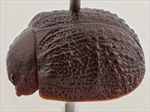
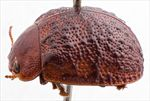
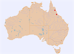

Click on images to enlarge
![Female, Windsor Tableland, North Queensland [QM]](assets/image/Ta225/Ta225_AGM-125_SM.jpg){kind=link}

Female, Windsor Tableland, North Queensland [QM]
{kind=link}

Female, Hidden Valley, nr Paluma, North Queensland
{kind=link}

Distribution
Name
Trachymela sp. Ta225
Reference specimen
1998-0560, Hidden Valley, 20km W of Paluma, N.E. Queensland.
Adult Description
Length: ♀ 6.7-7.1 mm [2], ♂ ? mm [0].
Colour: head: mid- to dark-brown, labrum yellow-brown, mandibles with black tips, the black often extending over much larger area; antennae uniformly straw-brown throughout, antennomere 11 may be slightly darker; pronotum: brown, same shade as head, sometimes with vaguely-defined slighly darker patches, black colouration present as a thin border at lateral margins; scutellum: brown, same shade as adjacent area of pronotum, thinly bordered in darker brown; elytra: brown, similar shade or fractionally darker than pronotum, almost uniformly so, verrucae similar in shade or of slighly darker shade, humeral callus similar or slighly darker than surrounds; venter: head dark-brown with gula sometimes darker, prosternum black, thoracic ventrites dark-brown or black, grading towards mid-brown at lateral extremes, abdominal ventrites and legs mid-brown, femurs sometimes darker, inside surface of elytral epipleura black. Cuticular wax: a thin layer of lighter-brown wax [this observation from a single specimen which was likely teneral, so may differ on a more mature specimen].
Head; punctures quite large (pd~2-2.5xef) and relatively evenly and densely packed. Antennae short, particularly in females (AL ♂=?%BL, ♀=30-32%BL), filiform. Pronotum; almost evenly curved transversely, foveal depression shallow with epidermis noticeably elevated in a rounded pustule behind the eyes and between it and the pronotal lateral margins, discal area smooth and shiny, with surface slighly uneven and puncturation clearly impressed, evenly to very slightly unevenly distributed and relatively dense (spacing~2-2.5pd), becoming much coarser at lateral margins. Front margins join lateral margins in a smoothly rounded right-angle, with lateral margin initially straight for a short distance before curving smoothly and gradually towards rear margin, broadest about ¾ of distance to posterio-lateral angle. Scutellum; surface smooth or quite rugose, with a sparse scatter of punctures of similar size but generally more shallow than those on adjacent area of pronotum. Elytra; surface evenly to slightly unevenly curved with a well-defined anterio-median depression, punctures distinct and large, closely spaced and evenly distributed over anterior two-third of surface, more crowded but still distinct in posterior third, small and moderate sized, mostly round and isolated verrucae are scattered along most of the length of VR1-VR7 with the raised interstices between them in the anterior sections of VR1 to VR3 usually joining them into ridges; the verrucae just behind the antero-median depression align closely and are partially joined to form an interupted, transverse ridge; posterior third of elytral suture carinate; surface discontinuous under the prominent humeral callus. Vertical extension of epipleura small (HCE/PW=0.31-0.34). Venter; Prosternal process almost parallel or slightly converging in anterior half, lightly closed anteriorly, a sparse scatter of setae present along prosternal process and on mesosternum, a single long seta present on anterior, median and posterior trochanters; front edge of metasternum beveled, slightly rounded; inner edge of posterior of epipleurae lacking setae. Aedeagus; unknown.
Larvae
unknown.
Eggs
unknown.
Similar species
Ta49 – in many ways, these two species are very similar, but Ta49 has a well-formed and continuous transverse ridge at the centre of the elytra rather than the transversely-aligned verrucae that form the ridge in Ta225.
Notes
Ta225 is known from just two females from North Queensland. The single host record is from Eucalyptus moluccana (Symphyomyrtus: Adnataria). Structurally, the species seems closest to the group that includes Ta49.
Copyright © 2026. All rights reserved.